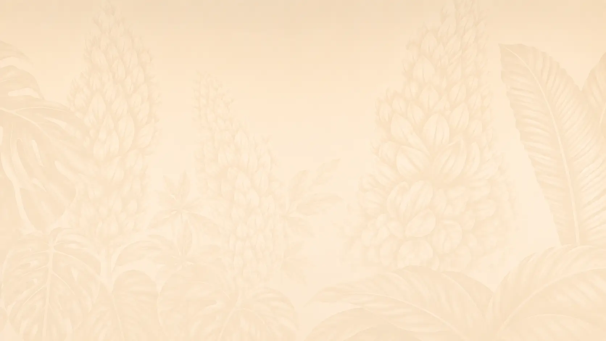
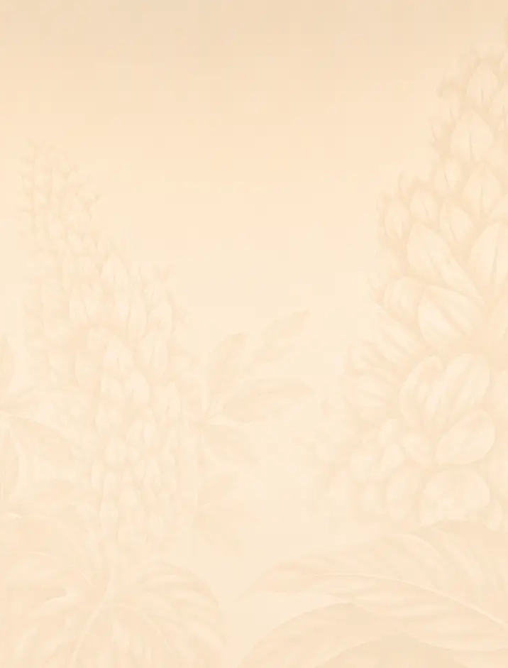
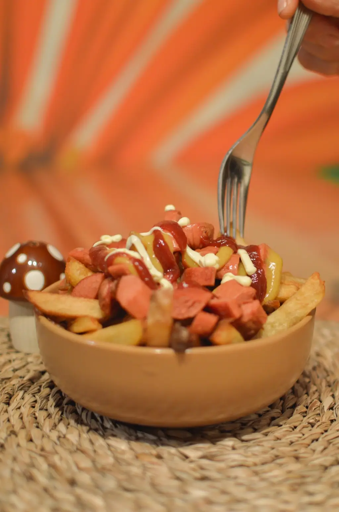
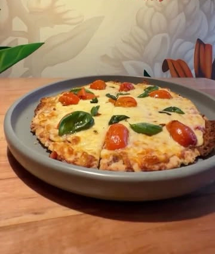

← Volver
¿Qué es una
tapioca?
La receta más antigua de Brasil: una masa que no lleva harina, no lleva gluten y se arma sola en la sartén.
Almidón de mandioca.
Nada más.
La tapioca es la goma que se extrae de la raíz de mandioca —la misma que en otros lugares llaman yuca, aipim o macaxeira—. Se ralla, se prensa y se deja decantar: ese almidón blanco, hidratado y tamizado, es todo el ingrediente.
Sin harina de trigo, sin levadura, sin leche y sin huevo. Por eso una tapioca es naturalmente libre de gluten y liviana, y por eso el relleno manda: dulce o salado, siempre entra.
Raíces de Brasil,
en sentido literal
Mucho antes de la llegada de los portugueses, los pueblos originarios —tupí y guaraní entre ellos— ya sabían transformar la mandioca: rallarla, prensarla en el tipiti para quitarle el líquido y aprovechar hasta el almidón que quedaba decantado en el fondo.
De esa técnica nació la tapioca. Hoy es desayuno, merienda y cena en el nordeste brasileño, se vende en carritos en la calle y cada casa tiene su relleno preferido.
Nosotros la trajimos a la Patagonia tal cual: la misma goma, la misma sartén, y rellenos que mezclan Brasil con lo que da esta cordillera.
Cómo se hace
Hidratar y tamizar
La goma de mandioca se humedece apenas y se pasa por un tamiz fino hasta quedar como arena suelta.
A la sartén, sin aceite
Se esparce sobre la sartén caliente. Con el calor el almidón se funde solo y forma un disco: no lleva ningún ligante.
Rellenar y doblar
Un minuto de cada lado, el relleno adentro, se dobla al medio y va directo a la mesa. Se come con la mano.



